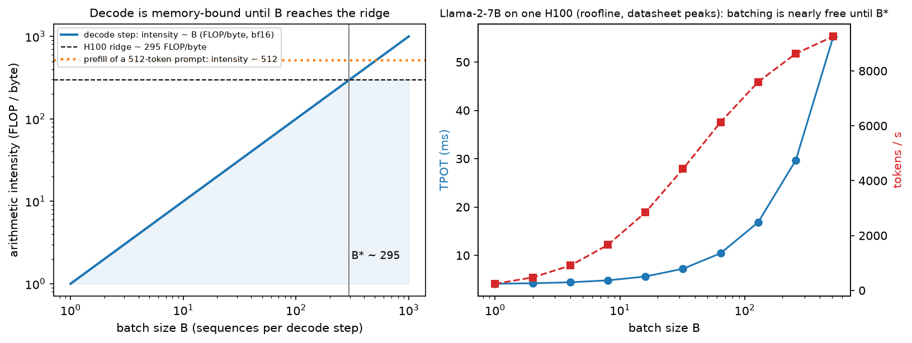
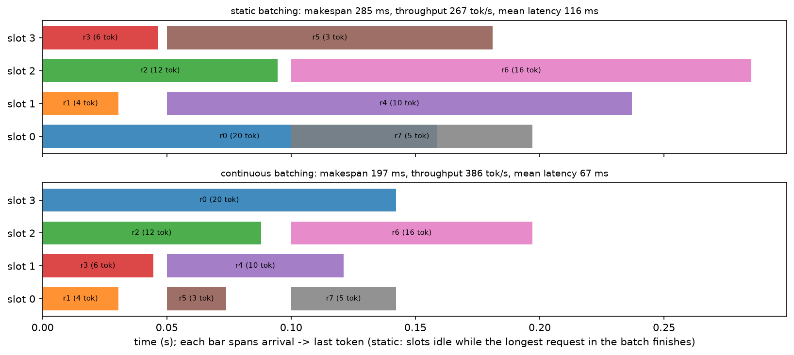
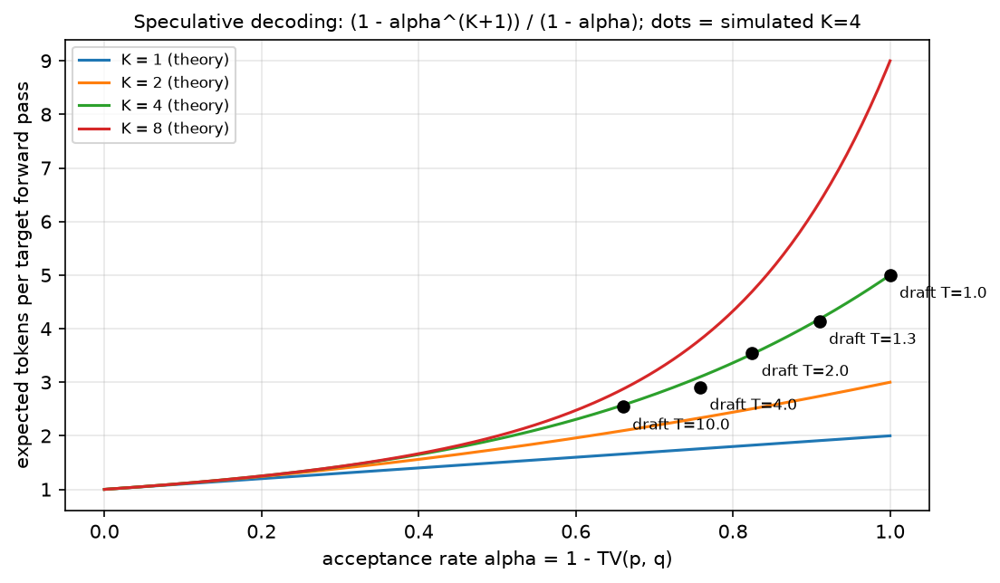

Inference systems¶
Why this matters at staff level. Inference is where ML meets the P&L: the same model at the same quality can differ 10× in cost per token depending on batching, KV-cache management and scheduling. Interviews test this with "TTFT vs TPOT, which do you optimise and why?", "why is decode memory-bandwidth-bound?" And "size a fleet for 50 QPS at a 200 ms TTFT SLO". Strong signal is deriving arithmetic intensity, naming the batch size where decode flips to compute-bound, and treating serving as a queueing problem with SLOs rather than a model problem.
TL;DR: the interview card¶
- Prefill processes all \(S\) prompt tokens in parallel: \(2PS\) FLOPs against \(\sim wP\) bytes of weights, intensity \(\approx 2S/w\) → compute-bound beyond a few hundred tokens.
- Decode produces one token per sequence per step: \(2PB\) FLOPs against \(wP + B\,T\,k\) bytes, intensity \(\approx 2B/w\) → memory-bandwidth-bound at small batch.
- Ridge batch: decode becomes compute-bound at \(B^\star = \frac{F_\text{peak}}{BW}\cdot\frac{w}{2}\). H100 (989 TFLOP/s, 3.35 TB/s): \(B^\star \approx 295\) in bf16, \(\approx 148\) in int8. A100: \(\approx 156\).
- Metrics: TTFT (prefill), TPOT/ITL (per-token decode), end-to-end \(= \text{TTFT} + (G-1)\cdot\text{TPOT}\), throughput (tokens/s), goodput (requests/s meeting their SLO), cost/1M tokens.
- KV cache per token \(= 2 \cdot L \cdot n_{kv} \cdot d_\text{head} \cdot w\) bytes: 512 KB/token for Llama-2-7B (MHA), 128 KB for Llama-3-8B and 320 KB for 70B (GQA). It, not weights, limits batch size.
- Continuous batching (iteration-level scheduling) evicts finished sequences and admits waiting ones every step; on variable-length workloads it is a 2–4× throughput win over static batching.
- Speculative decoding: draft \(K\) tokens with a cheap model, verify in one target pass, accept \(x\) with probability \(\min(1, p(x)/q(x))\) and on rejection resample from \(\max(0, p-q)\) normalised, the output distribution is exactly \(p\). Expected tokens per target call \(= \frac{1-\alpha^{K+1}}{1-\alpha}\) with \(\alpha = 1 - \mathrm{TV}(p,q)\).
- Disaggregation: prefill and decode have opposite bottlenecks, so run them on separate pools (DistServe, Splitwise) and ship the KV cache between them.
- Chunked prefill breaks long prompts into pieces merged into decode batches, trading a little TTFT for much steadier TPOT.
1. Intuition first¶
Generating 100 tokens from a 500-token prompt is two different programs wearing one API.
Take Llama-2-7B in bf16: 13.5 GB of weights, and one H100 with 3.35 TB/s of HBM bandwidth and 989 TFLOP/s of dense BF16 compute.
- Prefill. You have 500 tokens at once. The projections are \((500 \times 4096) \times (4096 \times 4096)\) matmuls: 500 rows of work per weight element read. Arithmetic intensity \(\approx 2\cdot500/2 = 500\) FLOP/byte, far above the H100's ridge of ~295. The GPU is doing what it was built for.
- Decode. You have one token. The same matmul is now \((1 \times 4096) \times (4096 \times 4096)\): a matrix-vector product. You read 13.5 GB of weights to do \(1.35\times10^{10}\) FLOPs, an intensity of 1 FLOP/byte. At best that step takes \(13.5\,\text{GB} / 3.35\,\text{TB/s} = 4.0\) ms, and the tensor cores are idle 99.7 % of the time.
The consequence organises the whole chapter: the only way to make decode efficient is to amortise the weight read across many sequences, i.e. batch. Each additional sequence in the batch is nearly free until you hit \(B^\star \approx 295\). That is why the entire serving stack (continuous batching, paged KV, disaggregation) exists to keep the batch full.
The second half of the intuition is what stops you from batching: the KV cache. Llama-2-7B stores 512 KB per token, so a batch of 64 sequences with 4096-token contexts is \(64 \times 4096 \times 512\,\text{KB} = 128\) GB, more than the GPU. GQA (Llama-3-70B: 320 KB/token) and paged allocation exist to buy back batch size.

Left: decode's intensity equals the batch size (in bf16), so it crosses the H100 ridge at \(B^\star \approx 295\), while a 512-token prefill sits far to the right, compute-bound. Right: the consequence. TPOT is nearly flat up to \(B^\star\) while throughput grows almost linearly, which is why batching is the highest-leverage serving decision.
2. The math¶
2.1 Arithmetic intensity of prefill and decode¶
Let \(P\) be parameters, \(w\) bytes per weight, \(B\) the batch, \(S\) the prompt length, \(T\) the current context length, and \(k\) the KV bytes per token per sequence.
Prefill (batch \(B\), \(S\) tokens each): FLOPs \(= 2PBS\) (plus the attention term); bytes moved \(\ge wP\) (weights, read once) \(+\,BSk\) (KV written).
Decode (one step): FLOPs \(= 2PB\); bytes \(= wP + BTk\) (weights plus the whole KV cache, every step).
Setting \(I_\text{decode}\) equal to the machine's ridge point \(F_\text{peak}/BW\) gives the batch size at which decode stops being memory-bound:
H100 SXM: \(\frac{989\times10^{12}}{3.35\times10^{12}} = 295\) FLOP/byte, so \(B^\star = 295\cdot\frac{2}{2} \approx 295\) sequences in bf16. A100 80 GB: ridge 156, \(B^\star \approx 156\). Quantising weights to int8 halves \(B^\star\) (to ~148 on H100) because you read half as many bytes. Quantisation's main serving benefit is bandwidth, not FLOPs. Note also what the KV term does: once \(BTk\) is comparable to \(wP\), further batching stops helping, because the extra sequences bring their own bytes. For 7B with \(T=4096\): \(wP = 13.5\) GB and \(BTk = B \cdot 2\) GB, so by \(B = 7\) the KV traffic already matches the weights, and the effective ridge batch is much lower than 295 in practice. This is the quantitative argument for GQA, KV quantisation and shorter effective context.
Time per step under the roofline is \(\max(\text{FLOPs}/F, \text{bytes}/BW)\), which is what
estimate_latency computes.
2.2 The serving metrics, and how they compose¶
Goodput, not throughput, is the number to optimise in a product: requests/second that meet both the TTFT and TPOT SLOs. Throughput and latency trade off through batch size, a larger batch raises tokens/s and raises TPOT, so a serving system without an SLO target is underspecified. The canonical tension:
| You care about | You choose | Because |
|---|---|---|
| Interactive chat (TTFT ≤ 300 ms, TPOT ≤ 40 ms) | moderate batch, chunked prefill, priority to prefill | a user reads at ~5–10 tokens/s; TPOT below that is invisible |
| Batch/offline (summarisation, evals) | max batch, no TTFT target | only cost/token matters |
| Agents / tool loops | low TPOT and low TTFT per hop | latency multiplies by the number of hops |
2.3 Continuous batching¶
Static batching runs a batch to completion: with generation lengths \(G_1..G_B\) the batch occupies all \(B\) slots for \(\max_i G_i\) steps, so the wasted slot-steps are \(\sum_i (\max_j G_j - G_i)\). For a geometric length distribution with mean \(\bar G\), \(\E[\max]\) grows like \(\bar G \ln B\), so utilisation falls as \(\bar G / (\bar G \ln B) = 1/\ln B\), worse with bigger batches, the opposite of what you want.
Continuous (iteration-level) batching re-decides membership every forward pass: finished
sequences leave, queued ones join immediately. Utilisation becomes limited only by arrivals and
memory, not by length variance. The simulator in continuous_batching_sim.py reproduces the
effect. The workload below is 300 Poisson arrivals at 30 req/s with mean generation 64 tokens.
| max batch | static tokens/s | continuous tokens/s | speed-up | mean latency (static → continuous) |
|---|---|---|---|---|
| 8 | 333 | 1197 | 3.6× | 21.5 s → 2.3 s |
| 16 | 374 | 1254 | 3.4× | 18.1 s → 2.0 s |
| 32 | 380 | 1306 | 3.4× | 16.9 s → 1.7 s |

The same eight requests under both schedulers. In the static timeline the short requests' slots sit idle until the 20-token request finishes; continuous batching refills each slot the moment it frees, cutting makespan and mean latency.
2.4 Speculative decoding: the acceptance rule¶
Decode is memory-bound, so one target forward pass can verify several tokens for almost the same cost as producing one. Let \(p\) be the target distribution and \(q\) the draft's, at some position. Draft \(x \sim q\); accept with probability \(\min\!\left(1, \frac{p(x)}{q(x)}\right)\); if rejected, sample from the residual
Claim: the emitted token is distributed exactly as \(p\). Let \(\alpha = \sum_x \min(p(x), q(x))\) be the acceptance probability. Then
using \(1 - \alpha = 1 - \sum_x \min(p,q) = \sum_x \max(0, p-q)\), which cancels the residual's normaliser.
Note also \(\alpha = \sum_x\min(p,q) = 1 - \mathrm{TV}(p,q)\): acceptance is one minus the total variation distance, so the draft's job is distributional agreement, not accuracy.
Throughput. With \(K\) drafted tokens and i.i.d. acceptance \(\alpha\), the number accepted before the first rejection is geometric, and a bonus token comes free from the target's distribution at the position after the last accepted one:
If the draft costs a fraction \(c\) of a target call, the speed-up is \(\frac{1-\alpha^{K+1}}{(1-\alpha)(1+Kc)}\). At \(\alpha = 0.8\), \(K = 5\), \(c = 0.1\): \(2.5\times\). At \(\alpha = 0.6\), \(K = 5\), \(c = 0.2\): \(1.2\times\). A weak draft with a large \(K\) can be barely worth it. The simulator matches the theory closely:
| draft temperature | \(\alpha\) | theory (\(K{=}4\)) | measured |
|---|---|---|---|
| 1.2 | 0.941 | 4.44 | 4.46 |
| 1.5 | 0.889 | 4.01 | 3.98 |
| 2.0 | 0.829 | 3.56 | 3.54 |
| 4.0 | 0.721 | 2.89 | 2.93 |

Expected tokens per target forward pass as a function of the acceptance rate, for several draft lengths; the black dots are the measured rates from the toy bigram implementation at \(K = 4\).
2.5 Capacity planning¶
Given a target load \(\lambda\) requests/s with mean prompt \(S\) and generation \(G\):
- Demand in output tokens/s \(= \lambda G\).
- Find the largest batch meeting the TPOT SLO: increase \(B\) until \(\text{TPOT}(B) > \text{SLO}\) or the KV cache no longer fits.
- Replica capacity \(= B / \text{TPOT}(B)\) tokens/s.
- Replicas \(= \lceil \lambda G / \text{capacity} \rceil\), then add headroom for burstiness (queueing delay explodes as utilisation → 1) and for the TTFT SLO under queueing.
Worked example from replicas_for_slo (Llama-2-7B, one H100, 512-token prompts, 256-token
generations, TPOT SLO 30 ms): the memory limit is 179 concurrent sequences; the SLO allows
batch 169, giving 5,647 tokens/s per replica. At \(\lambda = 20\) req/s the demand is
\(20 \times 256 = 5{,}120\) tokens/s, so one replica suffices at ~91 % utilisation, which is
exactly the point at which you should provision a second one for queueing headroom.
3. Implementation¶
3.1 Latency/throughput estimator¶
def estimate_latency(cfg, gpu, batch, prompt_len, gen_len, weight_dtype="bf16",
kv_dtype="bf16", n_gpus=1, efficiency=0.7):
P = count_params(cfg)["total"] # scalar: parameter count
w = BYTES_PER_DTYPE[weight_dtype] # bytes per weight
flops = gpu.peak_flops * n_gpus * efficiency # achievable FLOP/s
bw = gpu.hbm_bandwidth * n_gpus * efficiency # achievable bytes/s
kv_tok = kv_cache_bytes_per_token(cfg, kv_dtype) # bytes per token of KV
prefill_flops = 2.0 * P * prompt_len * batch # 2 FLOPs per param per token
prefill_bytes = w * P + batch * prompt_len * kv_tok # weights once + KV written
ttft = max(prefill_flops / flops, prefill_bytes / bw) # roofline: whichever binds
mid_ctx = prompt_len + gen_len / 2.0 # average context during generation
step_flops = 2.0 * P * batch # one token per sequence
step_bytes = w * P + batch * mid_ctx * kv_tok # weights + the whole KV, every step
tpot = max(step_flops / flops, step_bytes / bw)
...
The function is the §2.1 derivation with a single efficiency knob standing in for the gap
between datasheet peaks and real kernels. The structure is what matters in an interview: two
terms per phase, take the max, and notice that the decode term has the KV cache inside the
bytes, which is why TPOT degrades as the conversation grows.
3.2 Speculative sampling¶
def speculative_step(prev, P, Q, k, rng):
draft, cur = [], prev
for _ in range(k): # draft phase: k cheap sequential samples
cur = int(rng.choice(Q.shape[1], p=Q[cur]))
draft.append(cur)
contexts = [prev] + draft[:-1] # the token preceding each drafted token
out = []
for x, ctx in zip(draft, contexts): # verify phase: ONE parallel target call
p_row, q_row = P[ctx], Q[ctx] # (V,), (V,)
if rng.random() < min(1.0, p_row[x] / q_row[x]):
out.append(x)
else:
out.append(int(rng.choice(P.shape[1], p=residual_distribution(p_row, q_row))))
return out # discard everything after a rejection
out.append(int(rng.choice(P.shape[1], p=P[draft[-1]]))) # bonus token, free from the target
return out
Toy bigram models stand in for the two networks so the rule is the whole content. Two details carry the correctness: everything after a rejection must be discarded (its context is now wrong), and the bonus token after \(K\) acceptances comes from the target's own distribution at position \(K+1\), which the verification pass already computed.
Testing a sampler is the interesting part. The tests check the distribution, not a value:
20,000 runs of speculative_step and the empirical marginal of the first emitted token must be
within total variation 0.02 of \(P[\text{prev}]\), and the empirical conditional of the second
token given the first must match \(P\) row-wise. That is how you demonstrate "preserves the target
distribution" rather than assert it.
3.3 Continuous-batching simulator¶
def simulate_continuous(requests, max_batch, cost=CostModel()):
pending, running, t = sorted(requests, key=lambda r: r.arrival), [], 0.0
while pending or running:
admitted = []
while pending and pending[0].arrival <= t and len(running) < max_batch:
admitted.append(pending.pop(0)) # fill freed slots every iteration
running += [(r, 0) for r in admitted]
t += (cost.t_fixed
+ cost.c_prefill * sum(r.prompt_len for r in admitted) # merged prefill
+ cost.c_decode * (len(running) - len(admitted))) # decode the rest
still = []
for r, n in running:
n += 1
if n >= r.gen_len:
done.append(...) # sequence leaves the batch immediately
else:
still.append((r, n))
running = still
simulate_static is the same loop with the batch frozen until every member finishes. The tests
assert both conserve tokens and complete all requests, that continuous beats static by > 1.5× on
variable lengths, and (the sanity check that catches an unfair comparison) that the two agree
exactly when all requests are identical in length and arrive together.
Full implementation: src/mlbook/systems/inference_metrics.py
"""Prefill vs decode arithmetic intensity, latency/throughput estimates, capacity planning.
Weights: P parameters in ``w`` bytes each (2 for bf16). A GPU has peak compute
``F`` (FLOP/s) and HBM bandwidth ``BW`` (B/s); its ridge point is F / BW FLOP/byte.
Prefill of a prompt with S tokens (batch of 1):
FLOPs = 2 P S, bytes >= w P -> intensity ~ 2 S / w FLOP/byte (compute-bound for S >~ 300)
Decode step for a batch of B sequences at context length T:
FLOPs = 2 P B, bytes = w P + B * T * kv_bytes_per_token
intensity (ignoring KV) = 2 B / w -> memory-bound until B* = ridge * w / 2
e.g. H100: ridge = 989e12 / 3.35e12 ~ 295 FLOP/B -> B* ~ 295 sequences (bf16).
Time per decode step = max(compute time, memory time) (the roofline bound).
TTFT ~ prefill time; TPOT ~ decode-step time; throughput = B / TPOT.
"""
from __future__ import annotations
from dataclasses import dataclass
from mlbook.systems.memory_calc import BYTES_PER_DTYPE, TransformerConfig, count_params, kv_cache_bytes_per_token
@dataclass(frozen=True)
class GPU:
name: str
peak_flops: float # dense BF16 FLOP/s
hbm_bandwidth: float # bytes/s
memory_bytes: float
hourly_cost_usd: float = 0.0
@property
def ridge_point(self) -> float:
return self.peak_flops / self.hbm_bandwidth
# Datasheet figures (NVIDIA H100 SXM, A100 SXM 80 GB); cost left at 0 (fill in yours).
H100_SXM = GPU("H100 SXM", 989e12, 3.35e12, 80 * 1024**3)
A100_80GB = GPU("A100 SXM 80GB", 312e12, 2.0e12, 80 * 1024**3)
def prefill_intensity(prompt_len: int, weight_dtype: str = "bf16") -> float:
"""~ 2 S / w FLOP per byte of weights read."""
return 2.0 * prompt_len / BYTES_PER_DTYPE[weight_dtype]
def decode_intensity(batch: int, weight_dtype: str = "bf16") -> float:
"""~ 2 B / w FLOP per byte of weights read (KV traffic ignored)."""
return 2.0 * batch / BYTES_PER_DTYPE[weight_dtype]
def decode_ridge_batch(gpu: GPU, weight_dtype: str = "bf16") -> float:
"""Batch size at which a decode step becomes compute-bound: B* = ridge * w / 2."""
return gpu.ridge_point * BYTES_PER_DTYPE[weight_dtype] / 2.0
@dataclass(frozen=True)
class LatencyEstimate:
ttft_s: float
tpot_s: float
tokens_per_s: float
e2e_s: float
kv_bytes: float
def cost_per_million_tokens(self, gpu: GPU) -> float:
return gpu.hourly_cost_usd / 3600.0 / self.tokens_per_s * 1e6
def estimate_latency(
cfg: TransformerConfig,
gpu: GPU,
batch: int,
prompt_len: int,
gen_len: int,
weight_dtype: str = "bf16",
kv_dtype: str = "bf16",
n_gpus: int = 1,
efficiency: float = 0.7,
) -> LatencyEstimate:
"""Roofline estimate of TTFT, TPOT, throughput for one replica of ``n_gpus``.
``efficiency`` scales both peak numbers (kernels do not hit datasheet peaks).
Weights and KV are assumed to be spread evenly across ``n_gpus`` (tensor parallel).
"""
P = count_params(cfg)["total"]
w = BYTES_PER_DTYPE[weight_dtype]
flops = gpu.peak_flops * n_gpus * efficiency
bw = gpu.hbm_bandwidth * n_gpus * efficiency
kv_tok = kv_cache_bytes_per_token(cfg, kv_dtype)
prefill_flops = 2.0 * P * prompt_len * batch
prefill_bytes = w * P + batch * prompt_len * kv_tok
ttft = max(prefill_flops / flops, prefill_bytes / bw)
mid_ctx = prompt_len + gen_len / 2.0
step_flops = 2.0 * P * batch
step_bytes = w * P + batch * mid_ctx * kv_tok
tpot = max(step_flops / flops, step_bytes / bw)
kv_total = batch * (prompt_len + gen_len) * kv_tok
return LatencyEstimate(ttft, tpot, batch / tpot, ttft + gen_len * tpot, kv_total)
def max_batch_for_memory(cfg: TransformerConfig, gpu: GPU, context_len: int, weight_dtype="bf16", kv_dtype="bf16", n_gpus: int = 1) -> int:
"""Largest batch whose KV cache fits next to the weights (ignores workspace)."""
P = count_params(cfg)["total"]
free = gpu.memory_bytes * n_gpus - BYTES_PER_DTYPE[weight_dtype] * P
per_seq = context_len * kv_cache_bytes_per_token(cfg, kv_dtype)
return max(0, int(free // per_seq))
def replicas_for_slo(
cfg: TransformerConfig,
gpu: GPU,
requests_per_s: float,
prompt_len: int,
gen_len: int,
tpot_slo_s: float,
n_gpus_per_replica: int = 1,
efficiency: float = 0.7,
) -> dict[str, float]:
"""Capacity plan: largest batch meeting the TPOT SLO, then replicas = load / capacity."""
best_batch, best_tps = 0, 0.0
b_mem = max_batch_for_memory(cfg, gpu, prompt_len + gen_len, n_gpus=n_gpus_per_replica)
for b in range(1, b_mem + 1):
est = estimate_latency(cfg, gpu, b, prompt_len, gen_len, n_gpus=n_gpus_per_replica, efficiency=efficiency)
if est.tpot_s > tpot_slo_s:
break
best_batch, best_tps = b, est.tokens_per_s
if best_batch == 0:
return {"batch": 0, "replicas": float("inf"), "tokens_per_s_per_replica": 0.0}
demand_tps = requests_per_s * gen_len
import math
return {"batch": best_batch, "tokens_per_s_per_replica": best_tps,
"replicas": math.ceil(demand_tps / best_tps), "max_batch_by_memory": b_mem}
Full implementation: src/mlbook/systems/speculative_decoding.py
"""Speculative sampling (Leviathan et al. 2023; Chen et al. 2023) on toy bigram models.
Target p(. | prev) and draft q(. | prev) are rows of (V, V) matrices. For one
position, draft x ~ q. Accept with probability min(1, p(x)/q(x)); on rejection
resample from the residual r(x') = max(0, p(x') - q(x')) / sum_x max(0, p(x) - q(x)).
Why the output is exactly p:
P(output = x) = q(x) min(1, p(x)/q(x)) + (1 - alpha) r(x)
= min(q(x), p(x)) + max(0, p(x) - q(x)) [since 1 - alpha = sum max(0, p - q)]
= p(x).
where alpha = sum_x min(p(x), q(x)) = 1 - TV(p, q) is the acceptance probability.
With K drafted tokens the expected number produced per target call is
(1 - alpha^{K+1}) / (1 - alpha) (i.i.d. acceptance approximation).
"""
from __future__ import annotations
import numpy as np
def acceptance_rate(p: np.ndarray, q: np.ndarray) -> float:
"""alpha = sum_x min(p, q) = 1 - TV(p, q) for one position."""
return float(np.minimum(p, q).sum())
def residual_distribution(p: np.ndarray, q: np.ndarray) -> np.ndarray:
"""max(0, p - q) normalised; p, q: (V,) -> (V,)."""
r = np.maximum(p - q, 0.0) # (V,)
s = r.sum()
return r / s if s > 0 else p.copy()
def expected_tokens_per_call(alpha: float, k: int) -> float:
"""(1 - alpha^{k+1}) / (1 - alpha): expected accepted + 1 bonus token."""
if alpha >= 1.0:
return float(k + 1)
return (1.0 - alpha ** (k + 1)) / (1.0 - alpha)
def speculative_step(
prev: int, P: np.ndarray, Q: np.ndarray, k: int, rng: np.random.Generator
) -> list[int]:
"""One speculative round: draft k tokens with Q, verify with P, return 1..k+1 tokens.
P, Q: (V, V) row-stochastic bigram matrices; ``prev`` is the current token.
Every emitted token is distributed exactly as the target would have sampled it.
"""
draft: list[int] = []
cur = prev
for _ in range(k): # draft phase: k sequential cheap samples
cur = int(rng.choice(Q.shape[1], p=Q[cur]))
draft.append(cur)
# verify phase: the target scores all k+1 positions in ONE (parallel) call
contexts = [prev] + draft[:-1] # token preceding each drafted token
out: list[int] = []
for x, ctx in zip(draft, contexts):
p_row, q_row = P[ctx], Q[ctx] # (V,), (V,)
if rng.random() < min(1.0, p_row[x] / q_row[x]):
out.append(x)
else:
out.append(int(rng.choice(P.shape[1], p=residual_distribution(p_row, q_row))))
return out # everything after a rejection is discarded
# all k accepted: a free extra token from the target's k+1-th distribution
out.append(int(rng.choice(P.shape[1], p=P[draft[-1]])))
return out
def make_toy_models(V: int, temperature_draft: float, rng: np.random.Generator) -> tuple[np.ndarray, np.ndarray]:
"""Random bigram target P (V, V) and a draft Q = P smoothed toward uniform."""
logits = rng.normal(size=(V, V)) # (V, V)
P = np.exp(logits)
P /= P.sum(axis=1, keepdims=True) # (V, V) rows sum to 1
Q = np.exp(logits / temperature_draft)
Q /= Q.sum(axis=1, keepdims=True)
return P, Q
def generate(P: np.ndarray, Q: np.ndarray, start: int, n_tokens: int, k: int, rng: np.random.Generator) -> tuple[list[int], int]:
"""Generate ``n_tokens`` with speculative rounds; return (tokens, number_of_target_calls)."""
tokens: list[int] = []
calls = 0
cur = start
while len(tokens) < n_tokens:
new = speculative_step(cur, P, Q, k, rng)
calls += 1
tokens.extend(new)
cur = new[-1]
return tokens[:n_tokens], calls
Full implementation: src/mlbook/systems/continuous_batching_sim.py
"""Static vs continuous (iteration-level) batching, as a discrete-event simulation.
Cost model per iteration (one forward pass of the batch):
t_iter = t_fixed + c_prefill * (prompt tokens processed) + c_decode * (sequences decoding)
Static batching (naive): form a batch of up to B requests, run it to completion
(all sequences generate until the *longest* is done; finished ones are padding),
then admit the next batch.
Continuous batching (Orca, Yu et al. 2022; vLLM): after every iteration, evict
finished sequences and admit waiting ones into the freed slots. Prefill of a new
request is merged into the iteration (as in chunked prefill / vLLM's scheduler).
"""
from __future__ import annotations
from dataclasses import dataclass, field
@dataclass(frozen=True)
class Request:
rid: int
arrival: float
prompt_len: int
gen_len: int
@dataclass
class Completed:
rid: int
arrival: float
first_token: float
finish: float
gen_len: int
@dataclass(frozen=True)
class CostModel:
t_fixed: float = 0.005 # per-iteration overhead (kernel launches, scheduler)
c_prefill: float = 2e-5 # seconds per prompt token
c_decode: float = 5e-4 # seconds per decoding sequence per step
@dataclass
class Metrics:
makespan: float
output_tokens: int
completed: list[Completed] = field(default_factory=list)
@property
def throughput(self) -> float:
return self.output_tokens / self.makespan
@property
def mean_latency(self) -> float:
return sum(c.finish - c.arrival for c in self.completed) / len(self.completed)
@property
def mean_ttft(self) -> float:
return sum(c.first_token - c.arrival for c in self.completed) / len(self.completed)
def simulate_static(requests: list[Request], max_batch: int, cost: CostModel = CostModel()) -> Metrics:
"""Batches run to completion; a slot is not reused until the whole batch finishes."""
pending = sorted(requests, key=lambda r: r.arrival)
t, done, tokens = 0.0, [], 0
while pending:
t = max(t, pending[0].arrival)
batch = [r for r in pending if r.arrival <= t][:max_batch]
pending = [r for r in pending if r not in batch]
t += cost.t_fixed + cost.c_prefill * sum(r.prompt_len for r in batch) # prefill iteration
first = t
steps = max(r.gen_len for r in batch)
for step in range(1, steps): # first token came from prefill; remaining decode steps
t += cost.t_fixed + cost.c_decode * len(batch) # padding: all slots run
for r in batch:
finish = first + sum(cost.t_fixed + cost.c_decode * len(batch) for _ in range(r.gen_len - 1))
done.append(Completed(r.rid, r.arrival, first, finish, r.gen_len))
tokens += r.gen_len
return Metrics(t, tokens, done)
def simulate_continuous(requests: list[Request], max_batch: int, cost: CostModel = CostModel()) -> Metrics:
"""Iteration-level scheduling: finished sequences leave, new ones join each step."""
pending = sorted(requests, key=lambda r: r.arrival)
running: list[tuple[Request, int]] = [] # (request, tokens generated so far)
first_token: dict[int, float] = {}
t, done, tokens = 0.0, [], 0
while pending or running:
if not running and pending:
t = max(t, pending[0].arrival)
admitted = []
while pending and pending[0].arrival <= t and len(running) < max_batch:
admitted.append(pending.pop(0))
running += [(r, 0) for r in admitted]
t += cost.t_fixed + cost.c_prefill * sum(r.prompt_len for r in admitted) + cost.c_decode * (len(running) - len(admitted))
still = []
for r, n in running:
n += 1
if n == 1:
first_token[r.rid] = t
if n >= r.gen_len:
done.append(Completed(r.rid, r.arrival, first_token[r.rid], t, r.gen_len))
tokens += r.gen_len
else:
still.append((r, n))
running = still
return Metrics(t, tokens, done)
def make_workload(n: int, rate: float, seed: int = 0, mean_gen: int = 64) -> list[Request]:
"""Poisson arrivals at ``rate`` req/s, geometric-ish generation lengths."""
import numpy as np
rng = np.random.default_rng(seed)
arrivals = np.cumsum(rng.exponential(1.0 / rate, size=n)) # (n,)
gens = np.maximum(1, rng.geometric(1.0 / mean_gen, size=n)) # (n,)
prompts = rng.integers(32, 256, size=n) # (n,)
return [Request(i, float(arrivals[i]), int(prompts[i]), int(gens[i])) for i in range(n)]
How you'd test it. Intensity formulas against hand arithmetic; \(B^\star\) against the ridge point and its halving under int8; TPOT growing sublinearly in batch (memory-bound regime); speculative sampling against the target distribution empirically (marginal and conditional); static vs continuous equal on identical requests and 1.5×+ apart on variable ones.
Retype by hand¶
| Symbol | File | Retype from memory? | Target time |
|---|---|---|---|
acceptance_rate, residual_distribution, speculative_step |
src/mlbook/systems/speculative_decoding.py |
Yes: the speculative sampling acceptance rule | 15 minutes |
prefill_intensity, decode_intensity, decode_ridge_batch |
src/mlbook/systems/inference_metrics.py |
Yes | 5 minutes |
estimate_latency |
src/mlbook/systems/inference_metrics.py |
Yes: the latency/throughput estimator | 15 minutes |
simulate_continuous |
src/mlbook/systems/continuous_batching_sim.py |
Yes: the scheduler loop | 15 minutes |
expected_tokens_per_call, max_batch_for_memory, replicas_for_slo, simulate_static, make_toy_models |
same files | Read and understand | : |
Checks: pytest tests/test_systems_inference_metrics.py tests/test_systems_speculative_decoding.py tests/test_systems_continuous_batching.py -q.
4. Systems view: cost, failure modes, trade-offs¶
The serving stack, and what each layer buys.
| Technique | Buys | Costs / limits | Where it lives |
|---|---|---|---|
| Continuous batching | 2–4× throughput on variable lengths | scheduler complexity; TPOT varies with batch | vLLM, TGI, TensorRT-LLM |
| PagedAttention | near-zero KV fragmentation → bigger batch | indirection in the attention kernel | vLLM |
| Prefix/prompt caching | skips prefill for shared prefixes | cache memory; invalidation | vLLM, SGLang (RadixAttention) |
| Chunked prefill | steadier TPOT, better mixing | slightly worse TTFT for long prompts | vLLM, TensorRT-LLM |
| Speculative decoding | 1.5–3× lower TPOT at small batch | extra memory for the draft; no gain when already compute-bound | most engines |
| Quantisation (W8A8, W4A16) | halves/quarters weight bytes → lower TPOT, bigger batch | accuracy risk; calibration | all engines |
| KV quantisation (fp8/int8) | more sequences per GPU | small quality loss at long context | vLLM, TensorRT-LLM |
| KV offload to host/NVMe | very long contexts, more concurrency | PCIe bandwidth becomes the bottleneck | research + some engines |
| Disaggregated prefill/decode | each phase on its hardware; isolates TTFT from TPOT | KV transfer over the network | DistServe, Splitwise |
| Multi-LoRA serving | many fine-tunes on one base model | per-adapter kernels; routing | S-LoRA, vLLM |
| Semantic cache | skips the model entirely on near-duplicates | staleness, false hits; needs a similarity threshold + eval | application layer |
Failure modes. KV-cache OOM under load: admission control must reject or preempt rather than crash; vLLM preempts by swapping or recomputing a sequence's KV. Head-of-line blocking: one 32K-token prefill stalls every decode in the batch, the reason chunked prefill exists. TPOT drift: as sessions lengthen, \(BTk\) grows and TPOT degrades, so an SLO measured at session start is not the SLO at turn 20. Throughput collapse at high utilisation: queueing delay diverges as \(\rho \to 1\); plan for 60–80 % utilisation. Speculative decoding backfiring: at large batch the system is already compute-bound, and the draft's extra FLOPs slow it down, so production systems disable speculation above a batch threshold. Quantisation quality regressions that appear only on long-tail inputs; always evaluate on your own eval set, not the paper's.
Cost model to carry. Cost per 1M tokens \(= \frac{\text{GPU \$/h} \times G}{3600 \times \text{tokens/s}}\times10^6\). Because tokens/s in the memory-bound regime is roughly \(B \cdot BW/(wP)\), cost per token falls almost linearly with batch until \(B^\star\) or the KV limit, so every technique that raises achievable batch is a cost reduction, and that is the single sentence that ties this chapter together.
5. In production¶
UC Berkeley / vLLM: PagedAttention (2023)
Problem: KV-cache memory was fragmented and over-reserved (naive allocation reserves the max sequence length per request), capping batch size and wasting most of the cache. Built: PagedAttention, which stores KV in fixed-size blocks with a page table, plus continuous batching and copy-on-write sharing for beams and shared prefixes. Rejected: contiguous per-sequence KV buffers. Reported 2–4× throughput improvements over prior systems at the same latency. Source: Kwon et al., "Efficient Memory Management for Large Language Model Serving with PagedAttention", SOSP 2023, arXiv:2309.06180; the project's own launch post, June 2023.
Seoul National University / FriendliAI: Orca: iteration-level scheduling (2022)
Problem: request-level batching wastes slots because sequences finish at different times. Built: iteration-level scheduling (what everyone now calls continuous batching) plus selective batching for the operators that cannot be batched across different sequence lengths. This is the paper to cite for why continuous batching works, not just that it does. Source: Yu et al., "Orca: A Distributed Serving System for Transformer-Based Generative Models", OSDI 2022.
Google: speculative decoding (2023)
Problem: decode latency is bounded by memory bandwidth, not compute, so the accelerator is idle. Built: draft-then-verify with the modified rejection-sampling rule proven to preserve the target distribution exactly, reporting 2–3× wall-clock speed-ups on T5 and similar models without any quality change. DeepMind's concurrent paper gives the same rule. Sources: Leviathan, Kalman & Matias, "Fast Inference from Transformers via Speculative Decoding", ICML 2023, arXiv:2211.17192; Chen et al., "Accelerating Large Language Model Decoding with Speculative Sampling", 2023, arXiv:2302.01318.
Peking University / UCSD: DistServe, and Microsoft: Splitwise (2024)
Problem: prefill and decode have opposite bottlenecks and interfere when colocated, a long prefill spikes every colocated request's TPOT. Built: disaggregated serving, running prefill and decode on separate GPU pools with the KV cache transferred between them, each pool independently scaled and parallelised. Reported large gains in goodput under tight TTFT/TPOT SLOs. Splitwise additionally exploits the phases' different power/hardware profiles. Sources: Zhong et al., "DistServe: Disaggregating Prefill and Decoding for Goodput-optimized Large Language Model Serving", OSDI 2024, arXiv:2401.09670; Patel et al., "Splitwise: Efficient Generative LLM Inference Using Phase Splitting", ISCA 2024, arXiv:2311.18677.
Stanford / LMSYS: SGLang and RadixAttention (2024)
Problem: agentic and structured workloads re-send large shared prefixes (system prompts, few-shot blocks, tool schemas) and constrain outputs to grammars. Built: RadixAttention, a radix-tree KV cache that shares prefixes automatically across requests, plus a frontend language and a fast constrained-decoding path for JSON/grammar outputs. Source: Zheng et al., "SGLang: Efficient Execution of Structured Language Model Programs", NeurIPS 2024, arXiv:2312.07104.
NVIDIA: TensorRT-LLM
Problem: squeeze the last factor out of a fixed GPU. Built: fused kernels, in-flight (continuous) batching, paged KV, FP8 and INT4 weight-only quantisation paths, chunked prefill, speculative decoding and multi-LoRA, exposed through a compiled engine per model and parallel configuration. The trade-off relative to vLLM is flexibility (an engine must be rebuilt per shape/parallelism) for peak performance on NVIDIA hardware. Source: NVIDIA TensorRT-LLM documentation and GitHub repository.
6. Interview questions and strong answers¶
Why is decode memory-bandwidth-bound, and at what batch size does that stop being true?
A decode step reads every weight once and does 2 FLOPs per weight per sequence, so arithmetic intensity is \(2B/w\), 1 FLOP/byte at batch 1 in bf16. The GPU's ridge point is \(F_\text{peak}/BW\): 295 FLOP/byte on an H100. Setting them equal gives \(B^\star = \text{ridge}\cdot w/2 \approx 295\) sequences. Below that, time per step is \(wP/BW\) (fixed, independent of batch) which is why batching is nearly free and why the whole serving stack is built to keep the batch full. Staff follow-up: "does int8 quantisation double throughput?" It halves the bytes so it roughly halves the memory-bound step time and halves \(B^\star\) to ~148, but it does not help once you are compute-bound, and the KV cache (not the weights) may already dominate the bytes at long context.
TTFT vs TPOT: which do you optimise, and how do they trade off?
It depends on the product. TTFT is prefill plus queueing and is what the user perceives as "did it hear me"; TPOT is the streaming rate and stops mattering below reading speed (~10 tokens/s, i.e. 100 ms). For chat I'd target TTFT ≤ 300 ms and TPOT ≤ 40 ms and maximise goodput subject to both. They trade off through batching and scheduling: bigger batches raise TPOT; prioritising prefill improves TTFT but stalls decodes (head-of-line blocking), which chunked prefill fixes by slicing the prompt into pieces merged into decode iterations. If they genuinely conflict at scale, disaggregate: separate prefill and decode pools, sized independently. Follow-up: "what do you report to the business?" Goodput and cost per million tokens, not peak throughput.
Derive the speculative-decoding acceptance rule and prove it preserves the target distribution.
Sample \(x \sim q\), accept with probability \(\min(1, p(x)/q(x))\); on rejection sample from \(\max(0, p-q)\) normalised. Then \(\Pr[\text{out}=x] = q(x)\min(1, p(x)/q(x)) + (1-\alpha)r(x) = \min(p(x),q(x)) + \max(0,p(x)-q(x)) = p(x)\), where \(\alpha=\sum\min(p,q)\) is exactly the normaliser of the residual. So the output is exactly the target's distribution. The scheme is lossless, unlike distillation or early exit. Expected tokens per target call is \(\frac{1-\alpha^{K+1}}{1-\alpha}\), and \(\alpha = 1-\mathrm{TV}(p,q)\). Follow-up: "when does it stop helping?" When you are compute-bound (large batch), because the verification pass is no longer free; and when \(\alpha\) is low, since a \(K\) of 5 with \(\alpha=0.6\) and a draft costing 20 % yields only ~1.2×.
Size a fleet: 50 req/s, 1K-token prompts, 256-token outputs, Llama-3-70B, TTFT ≤ 1 s, TPOT ≤ 30 ms.
First the per-replica shape: 70B in bf16 is 141 GB, so a replica is at least 2 H100s for weights; I'd use 8-way tensor parallelism per replica for latency, giving ~8 ms TPOT at batch 32 and ~1.7 s TTFT for 2K prompts at that batch in my roofline estimate, TTFT is the binding constraint, so I'd use chunked prefill and cap the batch, or disaggregate prefill. Demand is \(50 \times 256 = 12{,}800\) output tokens/s. At batch 128 a replica delivers roughly 10K tokens/s but TPOT rises to ~12 ms (still inside SLO), so ~2 replicas of 8 GPUs plus headroom, call it 3 replicas / 24 GPUs for 60–70 % utilisation. Then I'd validate against a real benchmark, because the roofline ignores kernel efficiency and scheduling. Follow-up: "how does prefix caching change this?" If the 1K-token prompts share a long system prefix, prefill cost per request collapses and TTFT stops binding, which can halve the fleet.
Your P99 TTFT blew up but mean TTFT is fine. What happened?
Almost certainly head-of-line blocking or queueing at high utilisation. A few very long prompts monopolise prefill iterations, so short requests behind them wait, mean is fine, tail is not. Fixes: chunked prefill so a long prompt yields the GPU every chunk; a scheduler that bounds the prefill tokens per iteration; separate queues or priorities by prompt length; and at the fleet level, drop utilisation or shard by request class. The other candidate is KV-cache pressure causing preemption/recompute of running sequences, which shows up as sporadic latency spikes correlated with cache occupancy. Follow-up: "how would you tell the two apart?" Correlate tail events with (a) the largest prompt in the batch and (b) the cache eviction/preemption counter; they are separate metrics and only one will move.
When would you not use continuous batching?
When every request has identical length and arrives together, offline batch scoring, for example, the schedulers coincide and static batching is simpler with no scheduler overhead (my simulator asserts this equivalence as a test). Also when the model is so small that the per-iteration scheduling overhead is comparable to the forward pass, or when strict ordering or reproducibility per batch is required. Follow-up: "what is the cost of continuous batching?", TPOT becomes load-dependent (a user's stream slows when the batch grows), which you must either accept, bound with admission control, or hide with a per-request rate limit.
7. Exercises¶
-
★ Compute the KV cache for 200 concurrent Llama-3-70B sessions at 8K context in bf16. Does it fit on a node of 8×80 GB alongside the weights?
Solution
320 KB/token \(\times\) 8192 \(\times\) 200 = 500 GB. Weights are 141 GB, total 641 GB against 640 GB of HBM: no, with zero headroom for activations. Options: fp8 KV (250 GB), fewer sessions, or shorter context.
max_batch_for_memory(LLAMA3_70B, H100_SXM, 8192, n_gpus=8)gives the exact limit. -
★ At what batch does decode become compute-bound on an A100 in bf16, and how does that change with int8 weights?
Solution
Ridge \(= 312/2.0 = 156\) FLOP/byte, so \(B^\star = 156 \cdot 2/2 = 156\) sequences; with int8 weights \(w=1\) so \(B^\star = 78\). Half the bytes means you reach the compute roof at half the batch, but you also got there twice as fast.
-
★★ Using
speculative_decoding.py, measure the empirical acceptance rate and tokens/call for draft temperatures 1.1 to 5.0, and check both against \(\alpha = 1-\mathrm{TV}(p,q)\) and \(\frac{1-\alpha^{K+1}}{1-\alpha}\). Then find the \(K\) that maximises speed-up when the draft costs 15 % of a target call.Solution
Maximise \(f(K) = \frac{1-\alpha^{K+1}}{(1-\alpha)(1+0.15K)}\) numerically. For \(\alpha=0.9\) the optimum is around \(K = 5\)–\(7\); for \(\alpha = 0.7\) it drops to \(K \approx 3\); for \(\alpha \le 0.5\) speculation barely pays at \(c=0.15\). The measured tokens/call in the table above match the theory to within ~1 %.
-
★★ Extend
continuous_batching_sim.pywith amax_prefill_tokens_per_iterationcap (chunked prefill) and show that P99 TTFT improves while mean throughput is roughly unchanged.Solution
Admit prompts in slices: track remaining prompt tokens per request and charge
c_prefill * min(remaining, cap)per iteration, only moving a request into the decoding set when its prefill completes. With a cap of ~512 tokens, long prompts no longer occupy a whole iteration, so short requests' first tokens arrive sooner; total work is unchanged, so throughput moves little. -
★★★ Build a goodput curve: for batch sizes 1–256, compute (TTFT, TPOT, tokens/s) with
estimate_latency, then compute the fraction of requests meeting a 500 ms TTFT / 30 ms TPOT SLO under Poisson arrivals using the simulator, and find the batch cap maximising goodput.Solution
Goodput is non-monotone: it rises with batch while TPOT stays under SLO, then collapses once TPOT crosses it (every request fails, not just the marginal one). The optimum sits just below the batch where
estimate_latency(...).tpot_scrosses 30 ms, which for Llama-2-7B on one H100 is ~169, matchingreplicas_for_slo. The lesson to state: SLO systems have a cliff, so you provision below the knee, not at it.
References¶
- Kwon, W. et al. Efficient Memory Management for Large Language Model Serving with PagedAttention. SOSP 2023. arXiv:2309.06180. vLLM project blog, Easy, fast, and cheap LLM serving with PagedAttention, June 2023.
- Yu, G.-I. et al. Orca: A Distributed Serving System for Transformer-Based Generative Models. OSDI 2022.
- Leviathan, Y., Kalman, M., Matias, Y. Fast Inference from Transformers via Speculative Decoding. ICML 2023. arXiv:2211.17192.
- Chen, C. et al. Accelerating Large Language Model Decoding with Speculative Sampling. 2023. arXiv:2302.01318.
- Zhong, Y. et al. DistServe: Disaggregating Prefill and Decoding for Goodput-optimized Large Language Model Serving. OSDI 2024. arXiv:2401.09670.
- Patel, P. et al. Splitwise: Efficient Generative LLM Inference Using Phase Splitting. ISCA 2024. arXiv:2311.18677.
- Zheng, L. et al. SGLang: Efficient Execution of Structured Language Model Programs. NeurIPS 2024. arXiv:2312.07104.
- Agrawal, A. et al. Taming Throughput-Latency Tradeoff in LLM Inference with Sarathi-Serve. OSDI 2024. arXiv:2403.02310 (chunked prefill).
- Sheng, Y. et al. S-LoRA: Serving Thousands of Concurrent LoRA Adapters. 2023. arXiv:2311.03285.
- Pope, R. et al. Efficiently Scaling Transformer Inference. MLSys 2023. arXiv:2211.05102 (the arithmetic-intensity analysis of prefill vs decode on TPUs).
- NVIDIA. TensorRT-LLM documentation and repository.
- NVIDIA. H100 datasheet, H100 architecture whitepaper and A100 80 GB datasheet (the 989 TFLOP/s dense BF16 and 3.35 TB/s HBM3 figures behind the \(B^\star\) arithmetic).